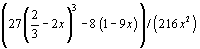
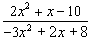
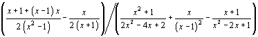
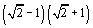
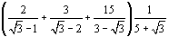
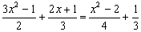
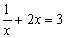
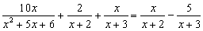
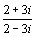
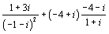

Online math calculators and solvers
Here you can find variety of powerful online math calculators and solvers for problems including polynomial equations, rational expressions, systems of equations, vectors, matrices, complex numbers, analytic geometry, statistics...
These calculators can help you with basic and advanced problems in high school and college math. All of them are capable of performing exact computations. Also, almost every of them will generate a step by step explanation.
All calculators have simple and easy-to-use interface.
1. Polynomial calculators and solvers
Arithmetic Operations With Polynomials - This calculator performs arithmetic operations with polynomials i.e., addition, subtraction, multiplication and division.
Synthetic Division Calculator - Divide polynomials, determine remainder, check if x-c is factor. Detailed explanation is provided.
Expand and Simplify Polynomials - This calculator will expand and simplify any polynomial. To see this, try examples such as (x - 1)(x + 1) or (a + 2b - c)2 or even 
Polynomial Roots Calculator - finds the roots of any polynomial. For Polynomials of degree less than or equal to 4, the exact value of any real roots (zeros) of the polynomial are returned. The calculator will show you a detailed explanation.
Factoring Polynomials Calculator - This online calculator writes a polynomial as a product of linear factors. It can factor polynomials with one or more variables. The calculator will show you the work and detailed explanation.
Polynomial Generator from Roots - This calculator can generate polynomial from given roots.
Polynomial Graphing Calculator - With this calculator you can calculate and graph: the roots (x-intercepts), signs, Local Maxima and Minima, Increasing and Decreasing Intervals, Points of Inflection and Concave Up/Down intervals.
2. Rational expressions calculators and solvers
Simplifying Rational Expressions Calculator - This calculator can simplify rational expressions such as  or . The calculator will show you a detailed explanation.
Multiplying and Dividing Rational Expressions Calculator - This calculator performs multiplication and division of algebraic fractions. It will show you the work and explanation.
Addition and Subtraction Rational Expressions Calculator - This calculator performs addition and subtraction of algebraic fractions.
3. Radical expressions calculators
Rationalize Radical Denominator - This calculator will eliminate a radicals in a denominator. You can rationalize radical denominators with 2 radicals or less.
Simplifying Radical Expressions Calculator - here you can simplify expressions such as  or even .
4. Solving Equations
Quadratic Equation Solver - this calculator solves quadratic equations step by step. It can solve quadratic equations by completing the square or by using quadratic formula.
Polynomial Equation Solver - This calculator will solve equations without x in denominator. Examples of such equations are: (2x + 3)2 - 4(x + 1)2 = 1 and  .
Rational Equation Solver - This solver will solve equations with x in denominator. Examples of such equations are:  and  .
5. Quadratic equation and function calculators
Quadratic Equation Calculator - solve quadratic equation, find factored form, find area under x-axis, draw the graph of quadratic function.
Quadratic Function Plotter - find x and y intercepts, find vertex focus and plot the quadratic function. Calculator will generate a detailed explanation.
6. Plane Geometry Calculators
6.1 Triangles
Equilateral Triangle Calculator - Enter side, perimeter, area or altitude of equilateral triangle then choose a missing value and the calculator will show you a step by step explanation on how to find that value.
Right Triangle Calculator - Easy to use calculators to solve right triangle problems. Enter two known sides or angles and calculate unknown side or angle. Step-by-step explanations are provided for each calculation.
Sine and Cosine Law Calculator - This calculator uses the Law of Sines and the Law of Cosines to solve oblique triangle i.e. to find missing angles and sides if you know any 3 of the sides or angles. The calculator will show you a step-by-step explanation.
6.2 Quadrilaterals
Square Calculator - Enter one known variable and calculate the side, area, perimeter or diagonal of a square. Calculator will generate a step-by-step explanation.
Rectangle Calculator - Calculate missing rectangle values if you are given two known values. Calculator will generate a step-by-step explanation.
6.3 Circle
Circle Calculator - Enter one known variable and calculate the area, circumference, raius or diameter of a circle.
7. Complex numbers calculators
Complex numbers (unary) operations - This calculator performs unary operations with complex numbers i.e., extracts the square root, calculate the modulus, finds inverse, finds conjugate, transform to polar form...
Complex number arithmetic - performs arithmetic operations with complex numbers i.e., addition, subtraction, multiplication and division. Step-by-step explanations are provided.
Simplify complex
expressions - This calculator will simplify expressions such as
 or
.
8. Systems of Equations solvers
Solve 2 by 2 system of equations - the calculator to solve system of two equations with step by step explanation using an addition/elimination method.
Solve 3 by 3 system of equations - solve system of three equations with step by step explanation using Gaussian elimination method or Cramer's rule.
Solve 4 by 4 system of equations
9. Vectors and Matrices
Vector Calculator - This calculator can add, subtract, find length, find dot and cross product, check if vectors are dependant... For every operation, calculator will generate a detailed explanation.
Matrix calculator - This calculators computes determinant, inverses, rank, trace, transpose, characteristic polynomial, eigenvalues, eigenvectors, LU decomposition and Cholesky decomposition.
Addition Subtraction and Multiplication of Matrices Calculator - this calculator performs arithmetic operations with matrices. Step by step explanation is provided too.
10. Calculus Calculators
Limit Calculator - This is a calculator which computes the limit of a given function at a given point. The calculator supports both one-sided and two-sided limits.
Derivative Calculator - This is a calculator which computes derivative, minimum and maximum of a function with respect to a variable x.
Integral Calculator - This is a calculator which computes the definite and indefinite integrals (antiderivative) of a function with respect to a variable x.
11. Analytic Geometry Calculators
11.1 Points in plane
Distance and midpoint calculator - calculate and plot the distance between two points and their midpoint. Calculator will generate a detailed explanation.
Triangle in plane - calculate triangle area, altitudes of a triangle, medians of a triangle, centroid, circumcenter and orthocenter.
11.2 Lines in plane
Graphing lines calculator - This linear function grapher will plot a line equation. Also, calculator will generate a step-by-step explanation.
Intersection of two lines calculator - online calculator to find and plot the point of intersection of two lines given by the equations in general form. Calculator will generate a detailed explanation.
Equation of a line passing through the two given points -This online calculator can find and plot General form and Slope y-intercept form of a straight line passing through the two given points. Calculator will generate a detailed explanation.
Distance between a line and a point - This calculator can find the distance between a given line and a given point.
Equations of a Parallel and Perpendicular Line - This calculator will find and plot equations of parallel and perpendicular to the given line and passes through given point.
11.3 Circle
Circle Equation Calculator - This calculator can find the center and radius of a circle given its equation in standard or general form. Also, it can find equation of a circle given its center and radius. The calculator will generate a step by step explanations and circle graph.
Equation of a Circle Through Three Points - This calculator will find and plot the equation of the circle that passes through three given points.
Intersection points of line and circle - This calculator finds the points of intersection of a line and a circle.
12. Trigonometry calculators
Degrees to radians converter - This calculator will convert angles between degrees and radians. The calculator will generate a step by step explanations.
Trigonometric Equations Solver - The calculator will find exact or approximate solutions of trigonometric equations. Solution can be expressed either in radians or degrees.
13. The numbers
Fraction Calculator - Add, subtract, multiply, divide, compare, simplify and convert fractions. A complete step-by-step explanation is provided for each operation.
GCD and LCM Calculator - Greatest Common Divisor (GCD) and Least Common Multiple (LCM) calculator with detailed explanation.
Prime Factorization Calculator - This calculator will find the prime factorization of the given number. Also it will determine whether or not a number is prime. Step-by-step explanations are provided.
Scientific Notation Calculator - Multiply, divide or convert numbers written in scientific or regular notation. The calculator will provide a Step-by-step explanation.
Percentage Calculator - This calculator solves the three basic types of percent problems. Step-by-step explanations are provided.
Decimal / Binary / Hexadecimal Converter - The step by step explanations are provided for every conversion.
14. Statistics Calculators
Descriptive Statistics - Mean, Mode, Median,Lower and upper quartile,...
Standard Deviation Calculator - Find standard deviation, variance and range of data set.
Probability Distributions - This calculator will find the mean, standard deviation and variance of a discrete probability distribution.
Z - score calculator - Find area under standard normal curve.
Normal Distribution Calculator - Enter mean, standard deviation and cutoff points and this calculator will find the area under normal distribution curve.
T Test Calculator - Two sample and one sample student's t-test with step by step explanations.
Correlation and Regression Calculator Find Linear Correlation Coefficient and Regression Line.
15. Financial calculators
All calculators in this category will generate a step by step explanation on how the solution was found.
16. Other Calculators
Operations on Sets Calculator - Find union, intersection, difference and Cartesian product of two sets. Explanations are provided for each operation.
"Work" Word Problems Calculator - Solve three types of 'work' word problems. Explanation is provided for each calculation.